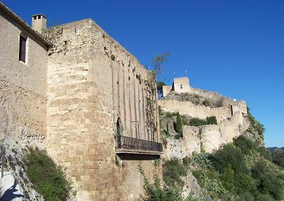
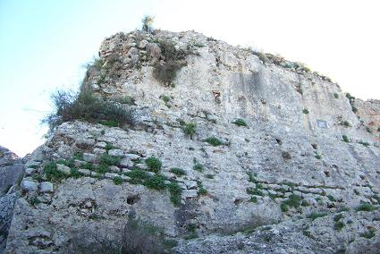

|
 |
Xátiva, una tierra que ha estado
habitada desde hace muchísimo tiempo. La Cova Negra, quizás sea el
asentamiento humano del Musteriense (30.000 años a.e.c.) más importante de
la cuenca del Mediterráneo. Se localiza en las proximidades de la ciudad. En Xàtiva los pueblos se han ido sucediendo. En Saiti los iberos tenían su
poblado, con un comercio muy activo y acuñaron su moneda, los
fenicios se acercaron a esta tierra y según varios autores latinos dicen
que la mujer de Aníbal alumbró en esta tierra a su hijo cuando los
cartagineses se dirigían a Roma.
Cuando Escipión venció a
Asdrúbal, Xàtiva y parte de pueblos del mediterráneo, sellaron sus pactos
con Roma, permaneciendo en paz hasta la revuelta de Viriato. En la guerra civil de
Roma, Sertorio logró el apoyo de la mayoría de pueblos de la Hispania,
incluidos los guerreros de Saetabis. Con la derrota de Sertorio la
libertad de los pueblos celtíberos de la Hispania quedó mermada.
|
Saetabis adquirió
una lengua, una religión, unas leyes y unas costumbres nuevas y
juntamente con Ilici y Dianium se convirtió en una de las ciudades más
importantes de la Contestania, territorio que abarcaba desde el río Júcar
hasta el Segura. Estaba situada en un punto estratégico atravesada por la
Vía Augusta, entre la Contestania y la Edetania. La riqueza de su fértil
suelo y sobre todo sus fábricas de lino hicieron de Xàtiva una ciudad
importante.
Augusto le concedió el
titulo de municipio y paso a denominarse Saetabis Augustunorum, con este
nombre aparece en varias inscripciones como la hallada en Tivoli (Italia), "L.
LICINUS....EX HISPANIA CI....MUNICIPIO SSAETABI ANNORUM XXII. II. S. EST
LICINUS LAUSU ET ...".
|
En Xàtiva han aparecido
estelas funerarias, un acueducto y se ha descubierto que era una ciudad que rendía
culto a Marte, era la deidad preferida, aunque también eran famosos los
templo de Sol-Júpiter y Hércules.
El castillo es
de origen ibérico, los romanos también eligieron ese punto para levantar
su fortaleza, de esta época se conserva la torre cuadrada del castillo
menor, cuya base es romana y la base de los aljibes. También destaca la
calzada romana del Portet.
También
fue sede episcopal en época visigoda.
Hay conocimiento que
varios obispos setabenses firmaron las actas de los Concilios de Toledo,
en el siglo VI. De esta época también es el acueducto de Alboi. |
 |
Más restos de época
romana se ha hallado en el Camí La Bola, se trata de una nautatio, datada
en el siglo I. Un ninfeo romano de la calle Sariers y estructuras
encontradas en el interior del colegio Jacint Castañeda, aledaño a la
excavación del Camí La Bola.
|